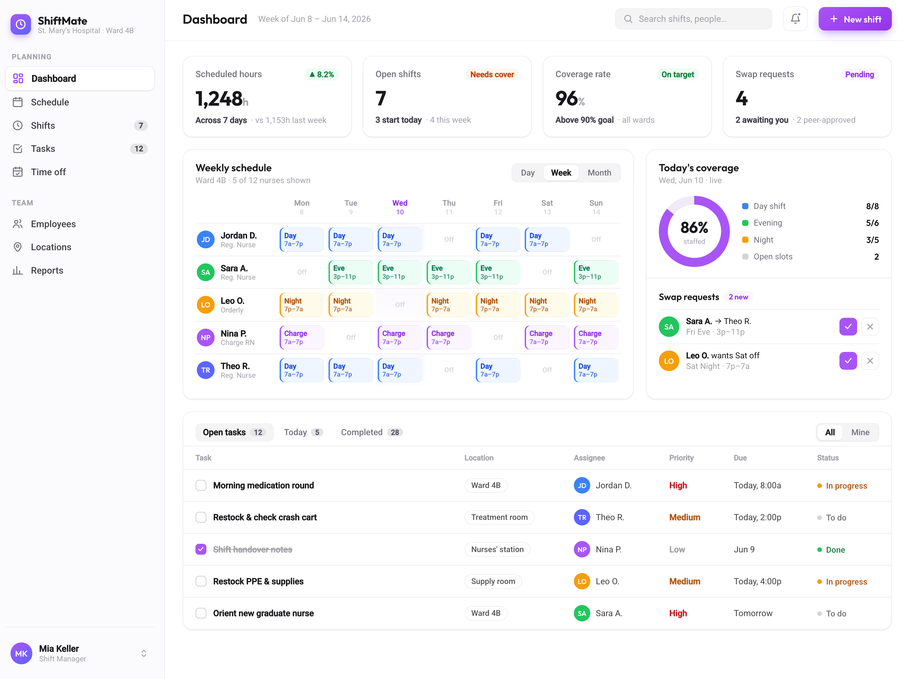
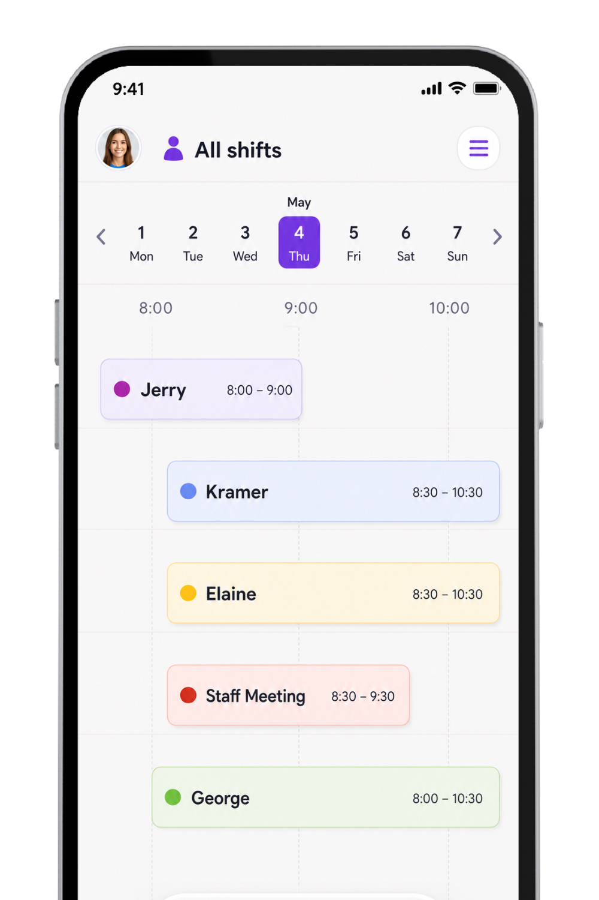
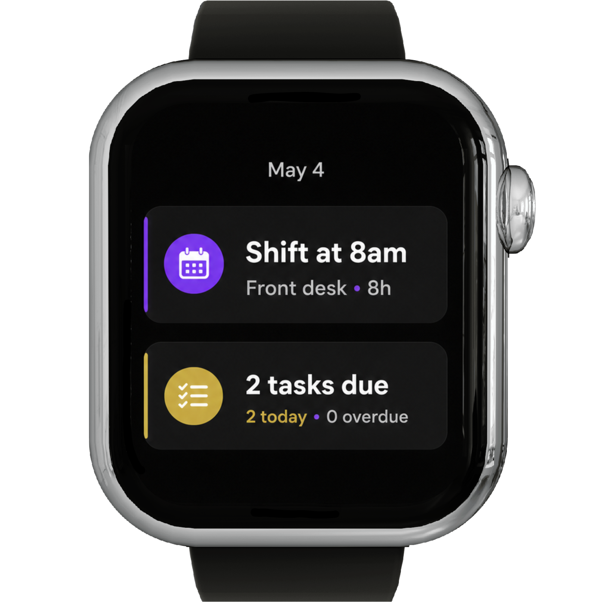
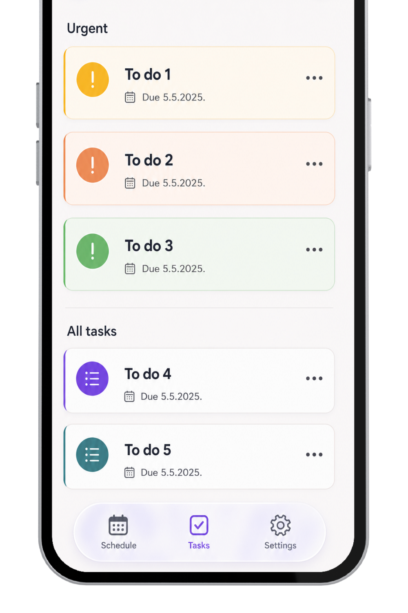

“ShiftMate turned a complicated weekly rota into something our managers can update in minutes. The team always knows what changed and why.”
Elena Brooks
Operations Director · Transistor
From hospital wards and busy cafés to retail floors and event crews, ShiftMate adapts to your roles, rules and daily workflows.

01
Build rotas around demand, qualifications and team availability.
02
Let qualified teammates exchange shifts without long message threads.
03
Keep managers updated as availability and staffing needs change.
04
Shape roles, permissions and tasks around your organisation.
ShiftMate brings rotas, availability, tasks and team communication into one clear workspace shaped around the way your organisation already works. Managers can coordinate people across hospital departments, café stations, retail floors, warehouses or event crews without forcing every team into the same process. Custom roles, permissions and workflows keep daily operations clear, while a simple dashboard gives everyone the information they need on any modern device.
The Advanced Scheduling Engine balances availability, demand, qualifications and role requirements when building each rota. Hospital managers can protect specialist coverage, while hotels, shops and restaurants can plan around busy periods and seasonal teams. Drag and drop changes update the schedule immediately, and managers can lock essential roles, control overtime and fill difficult shifts with qualified people. The result is a practical rota that responds to real staffing needs without relying on manual spreadsheets.
ShiftMate's built-in Team Chat keeps conversations connected to the right shift, location or team, so updates reach the people who actually need them. Share a ward handover, a new menu note, a delivery change or an event briefing directly in the relevant conversation. Read receipts, reactions and file sharing make communication quick without losing important details. Because each message stays connected to the schedule, teams can find the right context without searching through unrelated group chats.
The integrated Task Manager turns every shift into a practical checklist with clear ownership and deadlines. Assign safety checks in a hospital, opening tasks in a café, stock checks in retail or time sensitive setup duties for an event. Recurring templates make routine work easy to repeat, while reminders help staff complete urgent items on time. Managers can follow progress as it happens and spot unfinished work before it affects the next team or shift.
Smart Notifications alert the right people when a rota, task or shift request changes. Each organisation can decide which updates are essential, which roles should receive them and whether they arrive by push notification, SMS or email. Staff can respond to shift offers and swap requests quickly, while managers stay informed about changes that need approval. This keeps urgent information visible without filling every person's day with unnecessary alerts.
Work from anywhere
Check the rota, swap a shift and complete tasks from any device. Teams stay connected on the ward, shop floor, event site or morning commute.

Shaped around your organisation
Custom roles, permissions, rules and dashboards support the way your teams actually operate.


Tasks that match the shift
Assign opening checklists, closing duties, safety checks and urgent handovers directly within the schedule.
“ShiftMate turned a complicated weekly rota into something our managers can update in minutes. The team always knows what changed and why.”
Elena Brooks
Operations Director · Transistor
“Our café teams swap shifts without the usual back-and-forth. Managers still have control, but nobody needs to chase updates through group chats.”
Marcus Vale
People Lead · Reform
“We finally have one clear view across all locations. Availability, cover and opening tasks stay connected, even during our busiest weekends.”
Priya Shah
Regional Manager · Tuple
“Every event has different roles and timings. ShiftMate gives us the flexibility to build each crew properly and brief everyone before they arrive.”
Noah Bennett
Crew Coordinator · SavvyCal
“The live schedule has made handovers between reception, housekeeping and night staff much clearer. Everyone starts the shift with the same information.”
Sofia Laurent
General Manager · Statamic
Choose the right plan for your team
ShiftMate offers a clear starting point for growing teams and a tailored setup for organisations with more complex roles, rules and workflows.
$19 /month
For smaller teams that need reliable scheduling and task management.
$49 /month
For organisations that need tailored workflows, roles and dashboards.
FAQ
ShiftMate works in modern browsers on Mac, Windows, Chromebook, iOS and Android. Mobile companion apps also support notifications, location-aware clock-ins and offline access.
The engine combines demand, employee skills, availability, labour rules and your organisation's priorities. Managers can adjust the suggested rota at any time, and ShiftMate highlights conflicts before changes are published.
Yes, if your workflow allows it. ShiftMate checks qualifications, roles and working-hour rules before a swap is approved. Organisations can require manager sign-off or publish valid swaps automatically.
ShiftMate keeps work conversations separate from personal messaging. Access can be organised by role, department or location, while employees keep their personal phone numbers private.
ShiftMate can connect with payroll, POS and other operational tools. Teams can also export hours in CSV or use the API to fit scheduling data into an existing workflow.
Your roles, data and settings remain in place as the team grows. Larger organisations can move to a tailored setup that supports more locations, departments, seasonal staff and custom workflows.